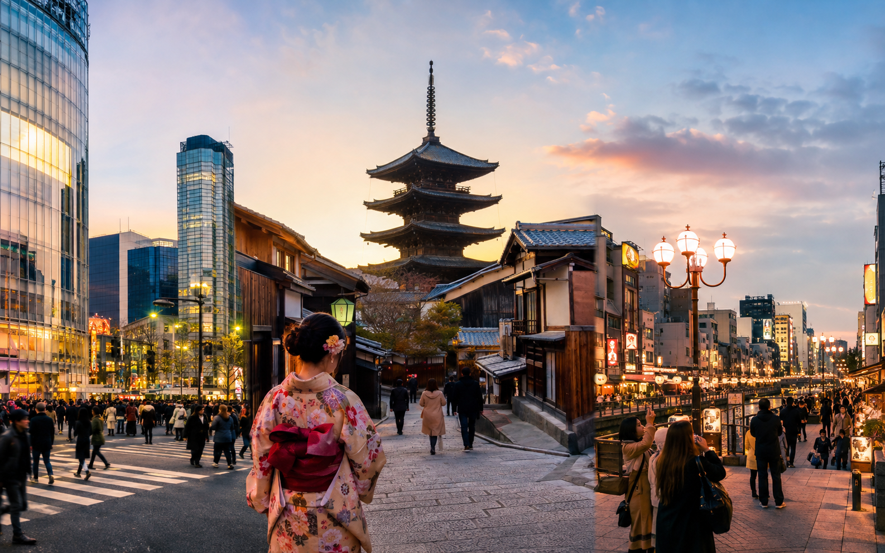
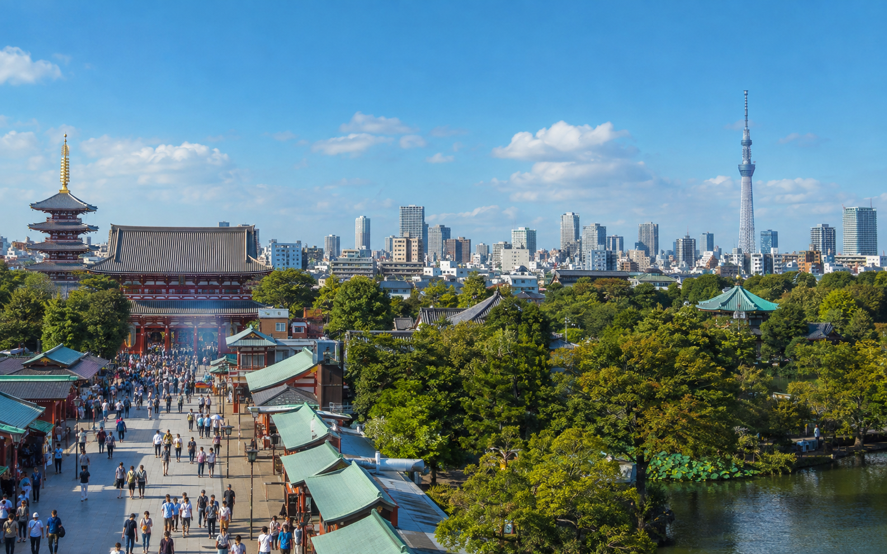
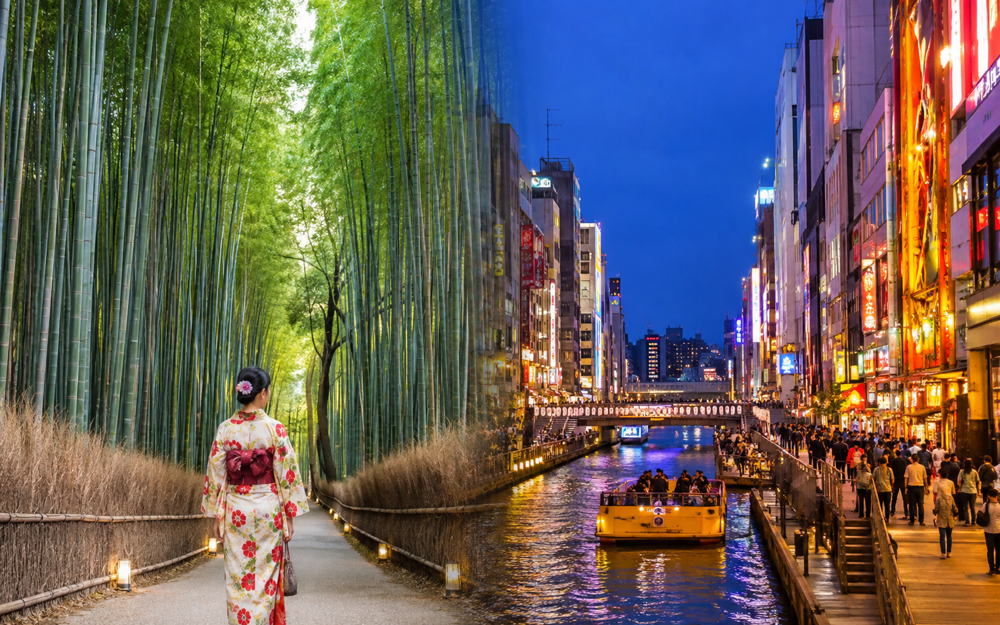

Japan 10-Day Itinerary for First-Time Visitors

Ten days in Japan gives first-time visitors enough room to see Tokyo, Kyoto, Osaka, and one useful side trip without turning the whole vacation into a series of hotel changes. Compared with a 7-day trip, the extra three days make a big difference. You can spend more time in Tokyo, give Kyoto two proper sightseeing days, stay in Osaka instead of squeezing it into a few hours, and include Nara without cutting too much time from the main cities.
For this route, I recommend Tokyo → Kyoto → Nara → Osaka. Tokyo, Kyoto, and Osaka are the three hotel bases, while Nara works as a stop between Kyoto and Osaka rather than another overnight stay. This keeps the route moving west and avoids returning to Kyoto after Nara just to pack and leave again the next morning.
This itinerary is built for a first-time traveler who wants a balanced pace rather than the maximum number of places. If you only have one week, use our Japan 7-Day Itinerary for First-Time Visitors ↗ instead. If you have two weeks, the 14-day route will give you room for another major destination.
Japan 10-Day Itinerary at a Glance
| Day | Sleep | Main Plan |
|---|---|---|
| Day 1 | Tokyo | Arrive, settle in, easy neighborhood evening |
| Day 2 | Tokyo | Asakusa , Ueno and eastern Tokyo |
| Day 3 | Tokyo | Meiji Jingu , Harajuku, Shibuya and Shinjuku |
| Day 4 | Tokyo | Flexible Tokyo day based on your interests |
| Day 5 | Kyoto | Shinkansen to Kyoto + downtown and Gion |
| Day 6 | Kyoto | Fushimi Inari, Kiyomizudera and Higashiyama |
| Day 7 | Kyoto | Arashiyama + another Kyoto area |
| Day 8 | Osaka | Nara stop, then continue to Osaka |
| Day 9 | Osaka | Full Osaka day + Dotonbori evening |
| Day 10 | Departure | Easy morning + Kansai Airport |
Why This 10-Day Route Works?
The main benefit of ten days is that you can use three hotel bases without making the trip feel rushed.
Tokyo gets enough time for several different sides of the city.
Kyoto gets two full sightseeing days rather than one fast temple checklist.
Osaka gets a proper overnight stay and full day.
Nara fits as a stop between Kyoto and Osaka.
That creates variety without adding unnecessary backtracking.
I would not make Hakone, Hiroshima, Kanazawa, or another distant city part of the default route. Ten days can technically fit more, but every extra destination takes time away from the places already included.
For a first visit, I would rather protect full sightseeing days than collect city names.
Best Arrival and Departure Setup
The cleanest version of this itinerary is:
Fly into Tokyo → travel west through Japan → fly home from the Osaka/Kansai region
That gives the route a natural direction:
Tokyo → Kyoto → Nara → Osaka
You do not need to return to Tokyo just for the international flight.
Before booking, compare:
- ✓Round-trip Tokyo airfare
- ✓Multi-city airfare
- ✓Cost of returning to Tokyo
- ✓Extra hotel night if needed
- ✓Airport transfer costs
- ✓Total travel time
A multi-city flight may cost more upfront but still make the total trip easier.
If you already booked a Tokyo round trip, the itinerary can still work. You will just need to adjust the final day or return to Tokyo on Day 9.
How Many Hotel Bases Should You Use?
For this route, I recommend only three:
Tokyo: 4 Nights
This gives you arrival evening plus three full sightseeing days.
Kyoto: 3 Nights
Enough for the transfer afternoon and two strong sightseeing days.
Osaka: 2 Nights
Enough for the Nara transfer day, one full Osaka day, and departure.
Nara does not need another hotel.
This matters because changing hotels adds more than the train time. It also means packing, check-out, luggage movement, finding the next hotel, and check-in.
Three bases is enough.
Where to Stay in Tokyo
For a 10-day first trip, I would prioritize transport access over room size.
Useful areas include:
- ✓Shinjuku
- ✓Shibuya
- ✓Ueno
- ✓Tokyo Station area
Your choice should depend on airport access and which parts of Tokyo you plan to spend the most time in.
The full comparison belongs in Where to Stay in Tokyo: Best Areas for First-Time Visitors.
Where to Stay in Kyoto
Good first-trip options can include:
- ✓Kyoto Station area
- ✓Downtown Kyoto
- ✓Kawaramachi
- ✓Gion area
Kyoto Station is useful for transport, while downtown and Gion can feel more convenient for evening walks and central sightseeing.
Use Where to Stay in Kyoto: Best Areas for First-Time Visitors before booking.
Where to Stay in Osaka
For this route, I would compare areas such as:
- ✓Namba
- ✓Shinsaibashi
- ✓Umeda
- ✓Osaka Station area
Namba and Shinsaibashi work well if food and nightlife matter more.
Umeda can be useful for wider transport connections.
The full decision belongs in Where to Stay in Osaka: Best Areas for First-Time Visitors.
Day 1: Arrive in Tokyo and Keep It Easy
Do not treat arrival day as a full sightseeing day.
After a long international flight, you may still need to handle:
- ✓Immigration
- ✓Luggage
- ✓Customs
- ✓Airport transport
- ✓Mobile data
- ✓Cash or payment setup
- ✓Hotel check-in
- ✓Jet lag
I would make the first evening simple.
After Arriving
Focus on:
- ✓Getting connected to mobile data
- ✓Reaching your hotel
- ✓Setting up local payment options
- ✓Finding the nearest useful station
- ✓Buying anything basic you need
Then stay close to the hotel.
What to Do on the First Evening
Choose an easy area based on where you stay.
If your hotel is in Shinjuku, explore nearby streets and have dinner there.
If you stay near Ueno, take a short walk around the station area.
If you stay around Shibuya, see Shibuya Crossing and eat nearby.
I would avoid expensive timed attractions on Day 1.
The goal is to get comfortable with Tokyo, not prove how much sightseeing you can fit after a long flight.
Day 2: Asakusa, Ueno and Eastern Tokyo

Your first full day should be easy to follow geographically.
I would start with Asakusa and then move through eastern Tokyo.
Morning: Asakusa and Sensoji
Start around Sensoji.
Visit:
- ✓Kaminarimon
- ✓Nakamise area
- ✓Sensoji
- ✓Nearby streets
Going earlier can make the area easier to enjoy before larger crowds arrive.
Do not rush straight to the next part of Tokyo.
Spend some time walking around Asakusa itself.
Lunch Around Asakusa
Eat nearby.
A common mistake is crossing the city because a famous restaurant appeared on social media.
If you already have good food options close to the day's route, use them.
That saves time.
Afternoon: Ueno
Move to Ueno.
Depending on your interests, choose from:
- ✓Ueno Park
- ✓Museums
- ✓Ameyoko
- ✓Shopping
- ✓Cafes
You do not need to do everything.
Pick one or two priorities and leave some room.
Evening Option
Choose one additional area.
Good options include:
Akihabara if gaming, anime, or electronics matter to you.
Tokyo Station and Marunouchi if you want a calmer central-city evening.
Ginza if shopping and department stores are a priority.
Choose one.
Do not add all three.
Why Day 2 Is Grouped This Way
Asakusa, Ueno, and nearby eastern Tokyo areas fit together much better than mixing them with Shibuya or Shinjuku.
This reduces unnecessary train travel and makes the first full day easier to follow.
I use the same rule throughout this itinerary:
Group by area before adding more attractions.
Day 3: Meiji Jingu, Harajuku, Shibuya and Shinjuku
Day 3 focuses on western Tokyo.
This gives you a very different experience from Day 2.
Morning: Meiji Jingu
Start at Meiji Jingu.
The shrine and forested surroundings give the day a quieter opening before the busier commercial areas.
Spend enough time to enjoy the setting rather than treating it as a fast photo stop.
Late Morning: Harajuku
Walk or continue toward Harajuku.
Depending on your interests, explore:
- ✓Takeshita Street
- ✓Omotesando
- ✓Side streets
- ✓Cafes
- ✓Shops
You do not need to visit every famous store.
Use Harajuku as a transition between Meiji Jingu and Shibuya.
Afternoon: Shibuya
Give Shibuya several hours.
You can include:
- ✓Shibuya Crossing
- ✓Shopping
- ✓Cafes
- ✓Department stores
- ✓A viewpoint if you have booked one
If you want a timed observation deck, make that the main reservation of the afternoon.
Avoid stacking several fixed bookings.
Evening: Shinjuku
Finish in Shinjuku.
Use the evening for:
- ✓Dinner
- ✓City streets
- ✓Shopping
- ✓Night views
- ✓A slower walk
If your hotel is in Shinjuku, this is especially convenient because the day ends near your room.
Day 4: Choose Your Tokyo Priority
This is one of the main ways the 10-day itinerary differs from the 7-day route.
Instead of leaving Tokyo after only two full sightseeing days, you get another day to follow your own interests.
I would choose one theme rather than try to fill every remaining gap.
Option 1: Central Tokyo
Good if you want:
- ✓Tokyo Station
- ✓Marunouchi
- ✓Ginza
- ✓Selected museums
- ✓Shopping
This can also help you become familiar with Tokyo Station before the Shinkansen to Kyoto.
Option 2: Anime, Gaming and Electronics
Spend more time around:
- ✓Akihabara
- ✓Specialist shops
- ✓Arcades
- ✓Related areas that fit your interests
This works better than squeezing Akihabara into an already full Day 2.
Option 3: Slower Tokyo Day
Use the extra day for:
- ✓A neighborhood you skipped
- ✓Shopping
- ✓Cafes
- ✓One museum
- ✓A booked experience
- ✓Rest
This is a good choice if Days 2 and 3 involved heavy walking.
Option 4: Mount Fuji or Hakone
Only choose this if seeing the Fuji area is one of your main reasons for visiting Japan.
It will use most of Day 4.
I would not add a Fuji-area trip and still expect a full Tokyo sightseeing day.
Something has to be replaced.
Which Day 4 Option Would I Choose?
For a first visit, I usually prefer keeping Day 4 in Tokyo.
Tokyo is large enough that three full days still leave plenty unseen.
Choose the Fuji/Hakone option only if it matters more to you than deeper Tokyo time.
The goal of this itinerary is not to include every famous location.
It is to make the 10 days feel complete without making them exhausting.
Day 5: Travel From Tokyo to Kyoto
Day 5 is the main long-distance transfer day.
I would leave Tokyo in the morning, but not so early that you turn the whole day into a race. The goal is to reach Kyoto with enough time for a useful afternoon and evening.
The Tokaido Shinkansen connects Tokyo with Kyoto, making this one of the easiest major transfers on a first Japan trip.
Before leaving Tokyo:
- ✓Check out
- ✓Confirm your train
- ✓Keep tickets or booking details ready
- ✓Make sure your luggage is manageable
- ✓Save your Kyoto hotel address
- ✓Keep important items in a small day bag
If your suitcase is large, check the current baggage rules or decide whether luggage forwarding makes more sense.
Arriving in Kyoto
Go to your hotel first.
If check-in is not open yet, leave your luggage where permitted.
Do not carry a large suitcase through Kyoto just to save an hour.
After that, keep the first Kyoto afternoon fairly light.
Afternoon: Downtown Kyoto
A simple first afternoon can include:
- ✓Nishiki Market area
- ✓Teramachi
- ✓Shinkyogoku
- ✓Kamo River
- ✓Central shopping streets
Choose what fits your hotel location.
The purpose is to get comfortable with Kyoto without turning the transfer day into a full temple itinerary.
Evening: Gion and Pontocho
Later, spend time around Gion or Pontocho.
This is a good evening for:
- ✓Walking
- ✓Dinner
- ✓Historic streets
- ✓A slower pace after travel
Keep photography respectful, especially in residential areas and places with local restrictions.
Why Day 5 Stays Light
A transfer day already includes packing, station time, train travel, hotel arrival, and orientation.
Adding several major temples on top of that usually makes the day worse.
Save the bigger sightseeing for the next morning.
Day 6: Fushimi Inari, Kiyomizudera and Higashiyama
Day 6 is the main historic Kyoto day.
The key is starting early and keeping the route geographically tight.
Early Morning: Fushimi Inari
Start at Fushimi Inari.
You do not need to complete the full mountain route unless hiking is a major priority.
For a first 10-day trip, I would spend enough time to enjoy the shrine and the lower trail sections, then continue.
Late Morning: Move Toward Eastern Kyoto
Next, head toward the Higashiyama area.
This part of Kyoto works better as a walking route than a list of separate attractions.
Kiyomizudera
Make Kiyomizudera one of the main stops.
Allow time for both the temple and the streets around it.
Then continue through nearby areas such as:
- ✓Sannenzaka
- ✓Ninenzaka
- ✓Yasaka Pagoda area
- ✓Smaller historic streets
Afternoon: Yasaka Shrine and Gion
Continue toward Yasaka Shrine and Gion.
By keeping the route in one side of Kyoto, you reduce transport and save energy.
If you already explored Gion on Day 5, use the later afternoon for a slower stop or nearby cafe instead of repeating the same streets.
Do You Need More Temples on Day 6?
Not necessarily.
A common Kyoto mistake is trying to visit so many temples that they start to blur together.
For this itinerary, I would rather keep:
- ✓Fushimi Inari
- ✓Kiyomizudera
- ✓Higashiyama
- ✓Yasaka/Gion
as the main structure.
The dedicated Kyoto Travel Guide for First-Time Visitors will cover the city in more depth.
Day 7: Arashiyama and a Second Side of Kyoto

Day 7 gives Kyoto a proper second sightseeing day.
This is one of the reasons the 10-day route feels much better than trying to squeeze Kyoto into one day.
Morning: Arashiyama
Start early.
Depending on your interests, spend time around:
- ✓Bamboo grove area
- ✓Tenryuji
- ✓River area
- ✓Nearby streets
Do not assume the bamboo grove alone needs half a day.
The wider Arashiyama area is what makes the visit useful.
Midday: Lunch in or Near Arashiyama
Stay nearby for lunch.
Again, avoid crossing Kyoto just because a famous restaurant is somewhere else.
Use the route you already have.
Afternoon: Choose One Kyoto Area
Do not try to combine all of Kyoto into one afternoon.
Choose one of these directions.
Option 1: Northern Kyoto
Good if you want another major temple area.
Option 2: Philosopher's Path Area
Better for a slower walking afternoon.
Option 3: Downtown Kyoto
Good if you want shopping, food, and a lighter finish.
Option 4: More Gion/Higashiyama
Useful if Day 6 felt rushed or you want more time there.
Pick one.
This is enough.
Why I Would Not Add Nara on Day 7
Because Day 8 is already designed around Nara.
Using Day 7 for another day trip would take away the second proper Kyoto day that makes the 10-day route worth having.
Keep Nara for the next day.
Day 8: Kyoto to Nara, Then Continue to Osaka
This is the most useful transfer day in the itinerary because Nara fits naturally between the two hotel bases.
Instead of:
Kyoto → Nara → Kyoto
then:
Kyoto → Osaka
the next morning,
I would use:
Kyoto → Nara → Osaka
on the same day.
That avoids unnecessary backtracking.
The Luggage Question on Day 8
This is the main practical issue.
You have three simple options.
Option 1: Forward the Main Suitcase to Osaka
This is the cleanest option if the service timing works with your hotels.
Keep a small bag with anything you need that day.
Option 2: Use Station Luggage Storage
Store your bag in Nara if suitable lockers or luggage storage are available for your bag size.
Then collect it before continuing to Osaka.
Option 3: Carry a Small Bag Only
If your main luggage is already small and manageable, this may be enough.
The important point is to plan the bag before Day 8.
Do not arrive in Nara with a large suitcase and only then start looking for a solution.
Morning: Leave Kyoto
Check out and head toward Nara.
I would not leave extremely late because Nara deserves several useful hours.
The exact train depends on your departure station and operator.
You do not need to learn every option in advance, but confirm the route before leaving the hotel.
What to See in Nara
For a first visit, keep the focus around the central park and temple area.
A simple route can include:
- ✓Nara Park
- ✓Todaiji
- ✓Nearby historic areas
- ✓Selected streets or gardens
You do not need to cover the whole city.
The goal is to experience Nara well enough without turning Day 8 into another exhausting checklist.
Lunch in Nara
Stay in Nara for lunch.
This keeps the day flowing naturally and gives you enough time before moving on to Osaka.
Afternoon: Finish Nara and Continue to Osaka
After sightseeing, collect your luggage if needed and travel to Osaka.
Once you arrive:
- ✓Check in
- ✓Get familiar with the nearest station
- ✓Keep the evening simple if you are tired
Evening in Osaka
If you still have energy, use the evening for a light introduction to the city.
Good options include:
- ✓Dotonbori
- ✓Shinsaibashi
- ✓Nearby food streets
Do not turn this into the full Osaka sightseeing day.
That comes tomorrow.
Why Nara Fits Better Here Than Hakone
This is one of the main choices that keeps the 10-day itinerary distinct.
Hakone would usually create another hotel base or consume a full Tokyo day.
Nara fits more naturally into the westward route between Kyoto and Osaka.
For a first 10-day trip, that gives better route efficiency.
If Mount Fuji is one of your main priorities, you can still replace Day 4 with a Fuji or Hakone trip.
But I would not include both Fuji and Nara by default.
By the End of Day 8, Your Route Should Feel Complete
At this point you have:
- ✓4 Tokyo nights
- ✓3 Kyoto nights
- ✓Nara as a side trip
- ✓2 Osaka nights
That is enough variety for 10 days.
There is no need to add another city just because two days remain.
The next part should be about enjoying Osaka and leaving Japan without rushing.
Day 9: Full Day in Osaka
Day 9 is your main Osaka sightseeing day.
Because you already had a light introduction on Day 8, I would use this day to see more of the city without trying to copy a two- or three-day Osaka itinerary into one day.
A balanced plan could include:
- ✓One major daytime area
- ✓One shopping or food area
- ✓Dotonbori in the evening
Morning: Choose One Main Osaka Area
You could start around Osaka Castle if history interests you.
Another option is to focus on Umeda for city views, shopping, and a more modern side of Osaka.
Pick one main morning area rather than crossing the city repeatedly.
Afternoon: Shinsaibashi or Namba
Spend the afternoon around Shinsaibashi, Namba, or nearby shopping streets.
This gives you:
- ✓Shopping
- ✓Cafes
- ✓Street food
- ✓Easy access to the evening area
Evening: Dotonbori
Finish in Dotonbori.
This is one of the best places to experience Osaka's evening energy, food signs, crowds, and nightlife atmosphere.
I would leave enough free time for dinner rather than locking the whole evening around one restaurant.
Should You Visit Universal Studios Japan?
Only if it is one of your main trip priorities.
A theme park day can take most of Day 9.
If you choose Universal Studios Japan, I would skip the standard Osaka sightseeing plan rather than try to combine both.
That keeps the day realistic.
Day 10: Easy Morning and Departure
Your final day depends on your flight time.
If you are flying from Kansai International Airport, I would keep the morning light.
Possible options include:
- ✓Breakfast near the hotel
- ✓Last-minute shopping
- ✓A short walk
- ✓One nearby attraction if time allows
Then head to the airport with a comfortable buffer.
Do not plan one final major cross-city attraction before an international flight.
If You Are Flying Back From Tokyo
If your ticket is round trip from Tokyo, this itinerary needs one adjustment.
I would usually return to Tokyo on Day 9 evening or reduce part of Osaka so you can sleep in Tokyo before the flight.
I would not recommend a tight same-day Osaka-to-Tokyo transfer followed immediately by an international departure unless your flight time leaves a very large margin.
This is one reason open-jaw flights can work well for this route.
What I Would Not Add to This 10-Day Itinerary
Ten days is enough for a strong first trip, but I would still leave these for a longer route unless one is a major personal priority:
- ✓Hiroshima
- ✓Miyajima
- ✓Kanazawa
- ✓Takayama
- ✓Hokkaido
- ✓Several Fuji-area stops
- ✓Multiple long day trips
- ✓Four or five hotel bases
These are good destinations.
They simply fit better into the 14- or 21-day Japan itineraries.
How This 10-Day Route Differs From the 7-Day Route
This page should not feel like the 7-day itinerary with three random days attached.
The extra time changes the structure.
7-Day Route
- ✓Tokyo and Kyoto are the main bases
- ✓Osaka or Nara is optional
- ✓Faster pace
- ✓Less room for deeper city time
10-Day Route
- ✓Tokyo, Kyoto, and Osaka are all main bases
- ✓Nara is included
- ✓Tokyo gets a full extra day
- ✓Kyoto gets a second full sightseeing day
- ✓Osaka gets a proper stay
That makes the 10-day route its own trip.
How Much Should You Budget for 10 Days?
For a first-time trip, a rough in-country planning range is:
Budget traveler: around ¥125,000–¥190,000 per person
Mid-range traveler: around ¥210,000–¥320,000 per person
International flights are separate.
Your actual cost will depend heavily on hotel level, season, intercity transport, food, and paid attractions.
Use Japan Trip Cost: Budget for 7, 10 and 14 Days for the full breakdown.
Do You Need the JR Pass?
Not automatically.
This route includes Tokyo, Kyoto, Nara, and Osaka, but that still does not mean the nationwide JR Pass is the best value.
Price the actual long-distance journeys first.
Then compare them with the current pass options.
Use Japan Rail Pass: Is the JR Pass Worth It? before buying anything.
Should You Use Luggage Forwarding?
It can be useful on this route, especially for Day 8.
The most helpful moment is:
Kyoto → Nara → Osaka
Forwarding the main suitcase to Osaka can make Nara much easier.
If you prefer to keep your luggage with you, check station storage before travel.
Common Mistakes With a 10-Day Japan Itinerary
Adding Too Many Extra Cities
The biggest risk is turning a balanced route into a rushed one.
Treating Nara Like Another Hotel Base
You do not need to stay overnight unless Nara is a major focus.
Trying to Add Hakone and Nara
Choose based on your priorities rather than forcing both.
Giving Osaka Only a Few Hours
If Osaka matters enough to include, give it a proper day.
Making Day 8 Too Complicated
Plan the luggage before leaving Kyoto.
Booking Too Many Timed Activities
Keep the route flexible enough to absorb delays and tiredness.
How to Adjust This Route
If You Want More Tokyo
Keep Day 4 fully in Tokyo and skip the Fuji/Hakone option.
If You Want More Kyoto
Skip Nara and stay in Kyoto longer.
If You Want More Osaka
Travel from Kyoto to Osaka earlier and use Nara as an optional separate day trip.
If Mount Fuji Matters Most
Replace Day 4 with a Fuji or Hakone day.
If You Dislike Hotel Changes
Keep Kyoto as the final base and visit Osaka as a day trip instead.
Use RoamPlans to Build the Schedule
Once your travel dates are fixed, use the Travel Itinerary Builder to place these 10 days into your actual calendar.
Use the Trip Cost Estimator to compare:
- ✓Tokyo + Kyoto + Osaka
- ✓Tokyo + Kyoto with Osaka as a day trip
- ✓Nara included vs skipped
- ✓Different hotel levels
This makes it easier to test whether the route still fits your budget and pace.
Frequently Asked Questions
Yes. Ten days is enough for a strong first trip if you keep the route focused around Tokyo, Kyoto, Osaka, and one side trip such as Nara.
I recommend Tokyo → Kyoto → Nara → Osaka, with Tokyo, Kyoto, and Osaka as the three hotel bases.
Around four nights works well, including the arrival day.
Three nights gives you the transfer afternoon plus two proper sightseeing days.
Two nights gives you one light arrival evening, one full day, and departure access.
Yes. Nara fits well between Kyoto and Osaka without requiring another hotel.
Only if Mount Fuji or an onsen stay is a major priority. Replace another day rather than adding it on top of the route.
Not automatically. Compare individual ticket prices with the current pass cost first.
It often makes the route cleaner, but compare the full airfare and transport cost before deciding.
No, as long as you keep the three main hotel bases and avoid adding several extra destinations.
Final Thoughts
A good 10-day Japan itinerary gives you more than extra attractions. It gives you a better pace. Tokyo, Kyoto, Nara, and Osaka fit well together because the route moves in one direction and keeps hotel changes under control. Protect those full sightseeing days, keep Nara as a side trip, and resist the urge to add another city simply because the train makes it possible.